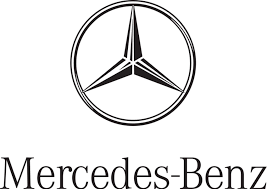

our cars

atchbacks & Saloons: The A-Class serves as the entry point, while the sleek CLA, core C-Class, and executive E-Class dominate the saloon segment.SUVs & Crossovers: High-riding options include the compact GLA and GLB, the mid-sized GLC, and the large GLE or GLS.Coupes & Convertibles: Two-door performance and styling are fronted by the CLE and the high-end Mercedes-AMG GT.All-Electric (EQ Range): Mercedes-Benz has sub-branded its electric lineup with models like the EQA (starting from €57,945), EQB (from €59,950), and flagship EQE SUV or EQS SUV.Off-Road Icons: The ultra-premium G-Class is available in both traditional internal combustion and Electric G-Class variants.

Mercedes-Benz is a premier German luxury and high-performance automobile manufacturer headquartered in Stuttgart, Germany. Regarded as the creator of the world's first internal combustion automobile, the brand has spent over a century establishing industry benchmarks for automotive engineering, passenger safety, and luxury comfort. The company was officially formed in 1926 through the merger of businesses owned by Karl Benz and Gottlieb Daimler. However, its roots trace back to 1886 when Karl Benz patented the Benz Patent-Motorwagen, an event widely recognized as the birth of the modern automobile. The brand name itself honors Karl Benz, while "Mercedes" was inspired by the daughter of Emil Jellinek, an influential early distributor who raced Daimler cars. This rich heritage is visually anchored by the iconic three-pointed star logo, which historically symbolized the founders' ambition to dominate motorized transport on land, sea, and air.
